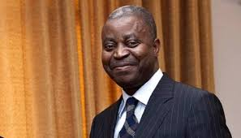

 Adolphe Muzito (born 12 February 1957[1][2][3]) is a Congolese politician who was Prime Minister of the Democratic Republic of the Congo from 2008 to 2012. Muzito, a member of the Unified Lumumbist Party (PALU), was Minister of the Budget under Prime Minister Antoine Gizenga from 2007 to 2008. Hailing from Gungu, Kwilu District, Muzito is an economist.[3] In the government that was appointed on 5 February 2007, Muzito was included as Minister of the Budget.[4] After Gizenga, the leader of PALU, resigned as Prime Minister on 25 September 2008 for reasons related to age and health, Muzito was appointed as his successor by President Joseph Kabila on 10 October 2008. Muzito's government was appointed on 26 October 2008. Aside from Muzito himself, it included 53 members: three deputy Primee ministers, 36 ministers, and 14 deputy ministers.[5] The government was dominated by members of the People's Party for Reconstruction and Democracy, and Kabila described it as "combat team to which has been assigned the essential missions of security and reconstruction". Muzito resigned as Prime Minister in March 2012. On 24 February 2015, former Belgian minister Serge Kubla [fr] was arrested on suspicion of bribing Adolphe Muzito.[7] In 2015, Muzito was suspended from PALU for three years after publishing critical comments about the running of the country, which were viewed as being contrary to the party's interests as part of the governing majority and as a form of insubordination.
To return click here